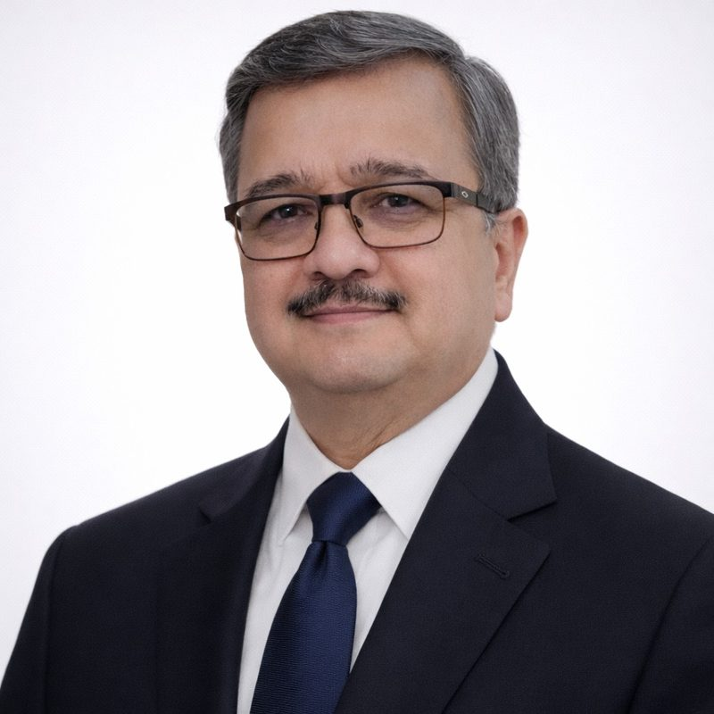

Dr Pankaj N Maheshwari
MS, DNB, MCh (Urology), FRCS (Glas)
Director of Urology, Fortis Hospital Mulund, Mumbai
Pioneer of Holmium Laser Enucleation of the Prostate (HoLEP) in India, introduced in 1998. A teacher of surgeons, an editor and reviewer for leading urology journals, and a member of international urology committees.
Trained in HoLEP in Tauranga, New Zealand, under its originators, Dr Peter Gilling and Dr Mark Fraundorfer.

- 1998HoLEP introduced in India
- 100+urologists and fellows trained in HoLEP
- 150+live-operative workshops, in India, Bangladesh and China
- 103publications, and four books co-edited
Introducing and teaching new techniques
Dr Maheshwari has introduced, described and taught a number of surgical techniques in India and neighbouring countries. Each item below is dated from his professional record.
HoLEP in India
Introduced Holmium Laser Enucleation of the Prostate in India, after HoLEP training under its originators, Dr Peter Gilling and Dr Mark Fraundorfer, in Tauranga, New Zealand.
Per-urethral Amplatz sheath
Described the per-urethral Amplatz sheath as a novel access for bladder stones in women. Published in the British Journal of Urology (1998) and cited in Campbell’s Urology, 9th edition.
First live PCNL workshop, Dhaka
Conducted the first live percutaneous nephrolithotomy (PCNL) workshop at Dhaka, Bangladesh.
Live laser prostatectomy workshop, Kunming
Conducted a live operative workshop on laser prostatectomy at Kunming, China.
First enucleation master class, Dhaka
Conducted the first master class on the technique of enucleation at Dhaka, Bangladesh.
CAPD catheter placement
Devised a new technique for placement of the CAPD (peritoneal dialysis) catheter, using laparoscopy and Amplatz dilators. Published in Urology (2014).
En-bloc excision of bladder tumours
Popularised en-bloc excision of non-muscle invasive bladder tumours (NMIBC) in India, including a holmium laser technique. Published in the Indian Journal of Urology (2020).
Techniques cited in Campbell’s Urology
His papers on percutaneous cystolithotomy for bladder stones (1999) and on nephrostomy tube after PCNL (2000) are also cited in Campbell’s Urology, 9th edition.
Journals and peer review
Editor
- Associate Editor, Indian Journal of Urology (2026–2030)
- Joint Editor, African Journal of Urology
Editorial board member
- Journal of Endourology
- World Journal of Urology
- Journal of Case Reports and Images in Urology
- Medicine
- Journal of International Medical Research
- World Journal of Advanced Case Reports
Peer review
- On the review panel of more than 60 journals
- Best Reviewer, Indian Journal of Urology: 2022 and 2024
- Best Reviewer, Journal of Endourology: 2021, 2023 and 2024
- Reviewer of the American Urological Association (AUA) guidelines on the surgical management of stone disease and on the early diagnosis of prostate cancer (2025)
- Abstract review committees: SIU (since 2017), USI (since 2021), AUA (since 2024) and the World Congress of Endourology
- Examiner for the DNB Urology examinations of the National Board of Examinations
Books and chapters
- Co-Editor, Bladder Cancer: Contemporary Guide to Clinical Management (Aug 2026)
- Co-Editor, USI’s Manual of Urology: Theory and Practice (Jan 2026)
- Co-Editor, USI’s Clinical Urology: A Practical Approach (Jan 2024)
- Co-Editor, Atlas of Endourology, published on behalf of the Urological Society of India (13 Feb 2021)
- Fifteen book chapters; 103 publications in national and international journals
Roles, awards and invitations beyond India
Society and committee posts, current and upcoming
- Member, Education Committee, Société Internationale d’Urologie (SIU), 2026–2029, taking office 13 November 2026
- Member, Research Committee, World Endourology Society, 2025–2027
- Associate Editor, Indian Journal of Urology, 2026–2030
- President Elect, Mumbai Urological Society, 2025–2027
- National representative, SAUS School of Urology
- Advisory board for establishing the SAARC Urological Association
International awards and fellowships
- SIU Fellow, Tauranga Medical Center, New Zealand (1999)
- Société Internationale d’Urologie Traveling Fellowship (1999–2000)
- Best Reviewer, Journal of Endourology (2021, 2023, 2024)
- Fellow of the Royal College of Surgeons of Glasgow, by invitation
- Training at New York Medical College (1998)
Invited faculty and committees
- Invited faculty at national and international conferences, and more than 250 guest lectures
- Live-operative workshops in Bangladesh and China
- Past National Delegate (2003–2005) and past member of the Research Committee, The Endourological Society
- Abstract review: SIU (since 2017), AUA (since 2024)
- Reviewer of AUA guidelines (2025)
- Multicentre research with the FUTURE Collaborative of the Endourological Society
Member of: the American Urological Association, The Endourological Society, the European Association of Urology, the Asian Urological Association, the Société Internationale d’Urologie, the SAARC Urological Association and the New York Academy of Sciences.
Training the next generation of urologists
Dr Maheshwari has trained more than 100 urologists and fellows in HoLEP, and more than 70 urologists from India and abroad in endourology. He has mentored more than 30 postgraduates who now hold significant clinical and faculty positions in India.
Postgraduate training
- Directs a DNB (National Board of Examinations) urology training programme at Fortis Hospital Mulund, mentoring two urology trainees a year
- Long-standing faculty member for the National Board of Examinations, and DNB Urology examiner
- Honorary Assistant Professor of Urology, Grant Medical College, Mumbai (2018–2023)
- Faculty, Center of Excellence for Minimal Access Surgical Training, Mumbai
Live-operative workshops
- Faculty in more than 150 live-operative workshops on HoLEP and endourology, including in India, Bangladesh and China
- First live PCNL workshop, Dhaka (2000)
- Laser prostatectomy live workshop, Kunming (2010)
- First master class on enucleation, Dhaka (2018)
Proctoring, lectures and teaching resources
- Recognised expert, official proctor and consultant (national and international) in HoLEP, PCNL and RIRS
- More than 250 guest lectures and about 100 abstracts presented at urology meetings
- Co-editor of four urology texts, including the Atlas of Endourology and the USI’s Manual of Urology
- Published research on webinar-based learning in PCNL (J Endourol, 2022)
His own training: HoLEP under Dr Peter Gilling and Dr Mark Fraundorfer, Tauranga, New Zealand (SIU fellow, 1999); New York Medical College, under Dr Akhil Das (1998). “My career has transitioned from pioneering surgical techniques to cultivating surgical talent.”
Profile
Dr Pankaj N Maheshwari is a urologist with 30 years of experience (since 1996), and Director of Urology at Fortis Hospital Mulund, Mumbai. His career has moved from pioneering surgical techniques to training the next generation of surgeons.
His HoLEP training was in Tauranga, New Zealand, under Dr Peter Gilling and Dr Mark Fraundorfer, the originators of the technique, as a Société Internationale d’Urologie (SIU) fellow in 1999. He also trained at New York Medical College in 1998. He started HoLEP in India in 1998.
His areas of interest are endo-urology, lithotripsy, holmium laser surgery, benign prostatic hyperplasia (BPH) and non-muscle invasive bladder cancer.
Qualifications
- MCh Urology, Grant Medical College, Mumbai (1992–1995)
- MS Surgery, Government Medical College, Nagpur (1989–1992)
- DNB General Surgery, National Board of Examinations, New Delhi (1993)
- MBBS, Government Medical College, Nagpur (1984–1989)
- FRCS (Glas), Royal College of Surgeons of Glasgow (by invitation)
Laser prostate surgery (HoLEP)
Pioneer of HoLEP in India. Dr Maheshwari introduced Holmium Laser Enucleation of the Prostate in India in 1998. He trained in the technique in Tauranga, New Zealand, under its originators, Dr Peter Gilling and Dr Mark Fraundorfer. He has since trained more than 100 urologists and fellows in HoLEP and has been faculty in more than 150 live-operative workshops, including in India, Bangladesh and China.
What is HoLEP?
HoLEP is a surgery for an enlarged prostate. A holmium laser is passed through the urethra, so there is no external cut. The surgeon uses it to separate the enlarged inner part of the prostate (the adenoma) from its outer capsule, in the same way that the segments of an orange are separated from the peel. The freed tissue is moved into the bladder, broken into small pieces with a morcellator and removed, and the pieces can be sent for laboratory examination.
Who is it for?
An enlarged prostate, known as benign prostatic hyperplasia (BPH), can cause a weak or slow stream, frequent urination, getting up at night, a feeling of incomplete emptying or, in some men, an inability to pass urine. Doctors consider surgery when medicines have not helped, when symptoms are troublesome, or when complications such as retention, infection, bladder stones or kidney strain occur. HoLEP is used for prostates of many sizes, including large ones. Whether it is suitable for a particular patient is decided only after an examination and tests.
Benefits, as commonly described
- It is done through the urethra, with no external incision.
- It removes the obstructing tissue completely, so that the tissue can be examined in a laboratory.
- The catheter and hospital stay are generally short.
- The effect on urine flow is generally long-lasting.
- It is used for small, medium and large prostates.
What to expect
- Consultation and assessment: history, examination, urine flow and ultrasound, blood tests, and a discussion of all treatment options.
- Surgery: usually under spinal or general anaesthesia.
- After surgery: a urinary catheter for a short period, advice on fluids and activity, and follow-up visits.
- Recovery: some burning, urgency or blood in the urine can occur for a few weeks. Your doctor will explain what is normal.
Risks and limits
Like every operation, HoLEP has risks. These include temporary burning or urgency, bleeding, urinary infection, temporary leakage of urine, narrowing of the urethra or bladder neck and, in many men, dry ejaculation (retrograde ejaculation). Results and risks differ from patient to patient, and no outcome can be guaranteed. Other options, such as medicines and other procedures, are also available and are discussed during a consultation.
General information for patients. It is not medical advice. Please see a qualified urologist for a diagnosis and a treatment plan.
Related experience: endoscopic enucleation (HoLEP), holmium laser surgery for non-muscle invasive bladder tumours (en-bloc resection), BPH and bladder neck problems.
Kidney stone treatment
Endo-urology, the treatment of urinary stones through natural passages or small keyhole openings, is a long-standing interest of Dr Maheshwari. He was Chief Urologist and Head of the Endourology Unit at R. G. Stone Urological Research Institute, Mumbai (1996–2003), and lithotripsy remains one of his areas of interest. He is a recognised expert, official proctor and consultant (national and international) in PCNL (percutaneous nephrolithotomy) and RIRS (retrograde intrarenal surgery), as well as HoLEP. In 2000 he conducted the first live PCNL workshop at Dhaka, Bangladesh.
Shock wave lithotripsy (ESWL)
Shock waves are directed from outside the body to break a stone into small pieces, which then pass in the urine. It is commonly used for suitable stones of small to moderate size.
Ureteroscopy and RIRS
A thin telescope is passed through the urine passage up to the stone, and a laser (commonly a holmium laser) breaks it into fragments. There is no cut on the skin. A temporary stent is sometimes placed afterwards.
PCNL
Larger or complex kidney stones may be treated through a small keyhole opening in the back, which is used to reach the stone and remove it. The patient usually stays in hospital for a short period.
The right treatment depends on the size, position and type of the stone, the anatomy of the kidney and the patient’s health, and is decided after assessment. Any procedure has risks, and no particular result can be guaranteed. General information, not medical advice.
Career
- PresentDirector of UrologyFortis Hospital Mulund, Mumbai. Faculty of the DNB urology training programme.
- 2018 – 2023Honorary Assistant Professor, UrologyGrant Medical College, Mumbai
- Dec 2006 – June 2013Senior Consultant UrologistAditya Birla Memorial Hospital, Pune
- July 2003 – Nov 2006Senior Consultant UrologistBombay Hospital, Indore
- Sept 1996 – June 2003Chief Urologist and Head of Endourology UnitR. G. Stone Urological Research Institute, Mumbai
Clinical profile
Specialist urology practice in tertiary institutions for 30 years (since 1996). Experience includes more than 3,500 HoLEP, more than 2,000 PCNL and more than 1,200 RIRS procedures.
International training
- Tauranga Medical Center, Tauranga, New Zealand: HoLEP training under Dr Peter Gilling and Dr Mark Fraundorfer, SIU fellow (1999)
- New York Medical College, under Dr Akhil Das (1998)
Awards and honours
- Best Reviewer, Indian Journal of Urology (2022, 2024)
- Best Reviewer, Journal of Endourology (2021, 2023, 2024)
- Urology Gold Medal, West Zone chapter of the Urological Society of India (2020)
- Parthsarthy Shukla Award (2018)
- Société Internationale d’Urologie Traveling Fellowship (1999–2000)
Scientific contributions
103 publications in national and international journals, fifteen book chapters and four co-edited books. His editorial roles and peer-review record are listed above.
Professional societies
Positions held include: Honorary Treasurer, Urological Society of India (2023–2025); Council Member, USI (2019–2021); Honorary Treasurer, West Zone Chapter of USI (2016–2018).
Technical contributions
- Described the per-urethral Amplatz sheath as a novel access for bladder stones in women
- Devised a new technique of placement of the CAPD catheter
- Popularised en-bloc excision of non-muscle invasive bladder tumours in India
Selected publications on laser prostate surgery
- HoLEP for BPH patients with large pre-operative postvoid residual urine: caution and care. Urology, 2025;195:148.
- Concordance among experts in assessing apical mucosal preservation during holmium laser enucleation of the prostate (HoLEP): implications for artificial intelligence model development. World J Urol, 2025;44(1):20.
- Real world propensity score matched analysis evaluating the influence of en-bloc vs. non en-bloc techniques, energy and instrumentation on enucleation outcomes for large and very large prostates. World J Urol, 2024;42(1):299.
- Incidence of complications and urinary incontinence following endoscopic enucleation of the prostate in men with a prostate volume of 80 ml and above: results from a multicenter, real-world experience of 2512 patients. World J Urol, 2024;42(1):180.
- Influence of prostate volume on the incidence of complications and urinary incontinence following thulium fiber laser enucleation of the prostate: results from multicenter, real-world experience of 2732 patients. Eur Urol Open Sci, 2024;63:38-43.
- Simultaneous intradetrusor onabotulinumtoxinA injections with holmium laser enucleation of the prostate: what is the hurry?. J Endourol, 2023.
- Risk factors for transurethral coagulation for hemostasis during holmium laser enucleation of the prostate. Int Neurourol J, 2022;26(4):353-354.
- A global knowledge, attitudes and practices survey on anatomical endoscopic enucleation of prostate for benign prostatic hyperplasia amongst urologists. Andrologia, 2020.
- A simple technique of tissue collection after morcellation during holmium laser enucleation of the prostate. Asian J Urol, 2020;7:68-69.
- Safety, feasibility and quality of holmium laser en-bloc resection of non-muscle invasive bladder tumors: a single center experience. Indian J Urol, 2020;36:106-111.
- Need for upper tract stenting in cases of ureteral orifice injury during holmium laser enucleation of prostate (letter). Int Urol Nephrol, 2019;51:459.
- Comparison of efficiency and complications of Lumines and Wolf morcellator after holmium laser enucleation of prostate. Indian J Urol, 2018;34(2):140-143.
- Best laser for prostatectomy in the year 2013 (review article). Indian J Urol, 2013;29:236-243.
Selected publications on stone disease
- Is fluoroscopy needed for endourological treatment of ureteral and renal stones? Systematic review and meta-analysis (FUTURE Collaborative of the Endourological Society). J Endourol, accepted for publication.
- PCNL vs RIRS in management of stones in calyceal diverticulum: outcomes from a global multicentre match paired study. World J Urol, 2023;41(11):2897-2904.
- Influence of webinar-based learning on practice of percutaneous nephrolithotomy: outcomes of a global survey. J Endourol, 2022;36(2):279-286.
- Evaluation of factors associated with the risk of hydrothorax following standard supra-costal percutaneous nephrolithotomy. Asian J Urol, 2022;9(3):301-306.
- Management of pleural injury after percutaneous renal surgery. J Endourol, 2009;23(10):1769-1772.
- Fluoroscopy guided percutaneous renal access in prone position (invited review). World J Clin Cases, 2015;3(3):245-264.
A fuller list is available on request.
Ask a question / Contact me
For enquiries and appointments, please write using the form, or write to the professional email address below.
- Name
- Dr Pankaj N Maheshwari
- Practice
- Director of Urology, Fortis Hospital Mulund
- Address
- Fortis Hospital Mulund, Mulund (West), Mumbai 400080, India
- dr.pankaj@laserprostatectomy.com